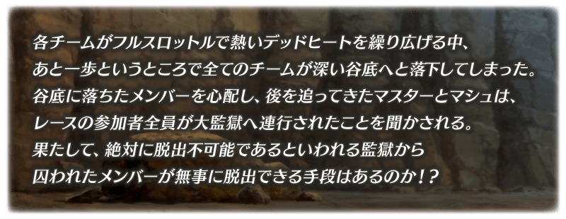
◆活動舉辦期間◆
2018年7月4日(三) 17:00～7月13日(五) 11:59
※7月10日(二) 23:00～7月11日(三) 6:00(預定)的期間將實施臨時維修。
臨時維修的實施時間變更至23:00～6:00(預定)。
關於實施時間的變更，抱歉帶給使用玩家的困擾。
由於維修中無法遊玩「Fate/Grand Order」，請在維修開始前結束關卡及戰鬥。
關於維修的詳情請自此處確認。
◆活動概要◆
舉辦期間限定活動「復刻:Death Jail・夏日逃脫 ～罪與絶望的梅芙大監獄2017～ 輕量版」！
實行聲援關卡來收集活動道具，協助被囚禁的Servant們逃脱吧！
此為二部構成活動的第二部。
通過第一部的主線關卡後才能參加。
在第一部的主線關卡通過時期間限定加入的「★4(SR)伊絲塔(Rider)」，通過第二部的主線關卡後就會正式加入。
推進活動以伊絲塔(Rider)的正式加入為目標吧！
※本活動為再調整2017年舉辦的期間限定活動「Death Jail・夏日逃脫 ～罪與絶望的梅芙大監獄2017～」更容易遊玩的「復刻輕量版活動」。
※在上次舉辦時獲得過「聖杯」的情況，於輕量版復刻活動會以「傳承結晶」代替「聖杯」做為通過報酬。
◆活動參加條件◆
只限通過「復刻:Dead Heat・夏日競賽！ ～夢與希望的伊絲塔盃2017～ 輕量版」主線關卡的Master才能參加
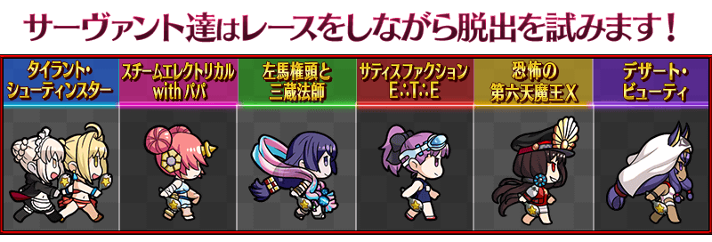
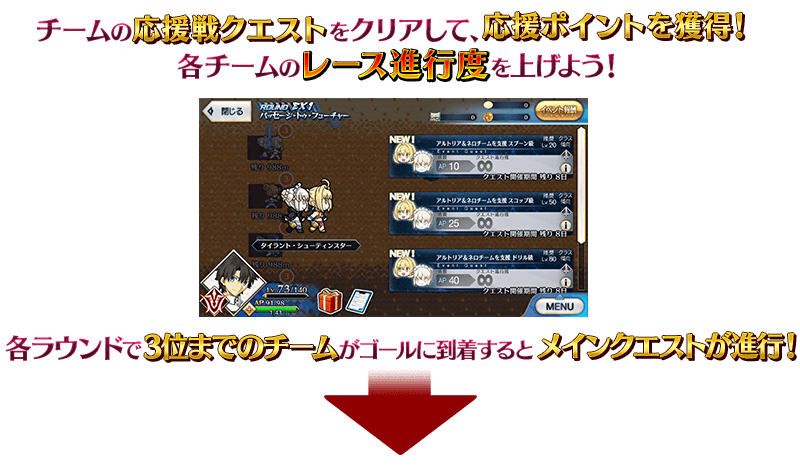
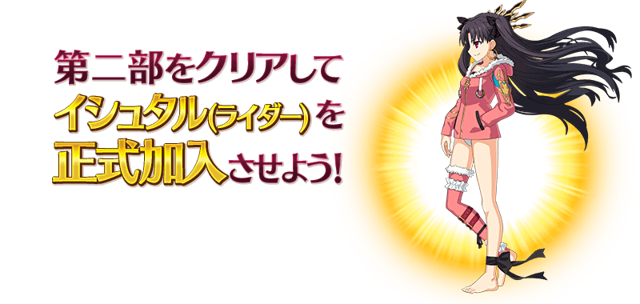
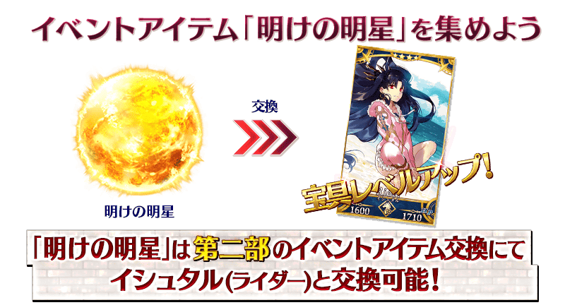
※「黎明之金星」與伊絲塔(Rider)的交換會在伊絲塔(Rider)正式加入後開放。
※「黎明之金星」可從通過第二部的主線關卡後開放的高難易度關卡通過後入手。
進行主線關卡的話，會發生「競賽聲援戰(レース応援戦)」。
通過任意想聲援隊伍的聲援戰關卡後，會獲得「聲援點數(応援ポイント)」，讓該隊伍的競賽進行度上昇。
各隊伍的競賽進行度會根據所有Master的點數合計値來進行。
與其他Master同心協力幫助中意的隊伍的逃脫吧！
前3名隊伍抵達終點，競賽聲援戰結束的話，可獲得「高排獲獎隊伍報酬(上位入賞チーム報酬)」。
「競賽聲援戰」結束的話會結束現在参加中的ROUND，競賽會移動到下個ROUND。
◆靠剩餘距離確認競賽的進行度！◆
競賽中在各隊伍的進行度會在隊伍圖示下方以「終點前的剩餘距離」顯示。
競賽陷入膠著狀態時，靠剩餘距離確認想聲援的隊伍吧！
◆前3名隊伍到達終點後ROUND結束！◆
復刻前的活動是以「所有隊伍到達終點時間點」才結束競賽聲援戰的形式，復刻輕量版則是「前3位隊伍到達終點時間點」結束競賽聲援戰。
◆關於主線關卡的進行◆
競賽中前3名隊伍到達終點的話就會進行主線關卡。
※在ROUND結束的情況，只要通過任意隊伍的聲援戰關卡後，就會顯示競賽排名，才能進行主線關卡。
通過主線關卡後競賽會移動到下個ROUND。
另外，請注意進入下個ROUND將無法回到前1個的ROUND。
※請注意根據参加活動的時間點，會有「競賽聲援戰」結束的情況。
在該情況不會影響主線關卡的進行，但無法執行聲援戰關卡。
※通過第二部的主線關卡後，在全體地圖會出現可收集活動道具的「地下通貨集め」關卡。
| ROUND名 | 競賽聲援戰舉辦期間 |
|---|---|
| ROUND EX1 パッセージ・トゥ・フューチャー | 7月4日(三) 17:00～ |
| ROUND EX2 ？？？ | ROUND EX1結束後 |
| ROUND EX3 ？？？ | ROUND EX2結束後 |
| ROUND EX4 ？？？ | ROUND EX3結束後 |
◆超值攻略方法・其1◆
在各隊伍的聲援戰關卡使用可在活動道具交換和關卡報酬等獲得的推進道具「出星湯匙」「卡路里肉」「寶具槌子」的話，會得到在戰鬥有利的效果。
推進道具，在關卡開始前，可任意選擇1種類使用。
※關卡中的推進道具效果對我方全體<含候補>都有作用，直到戰鬥結束都會持續。
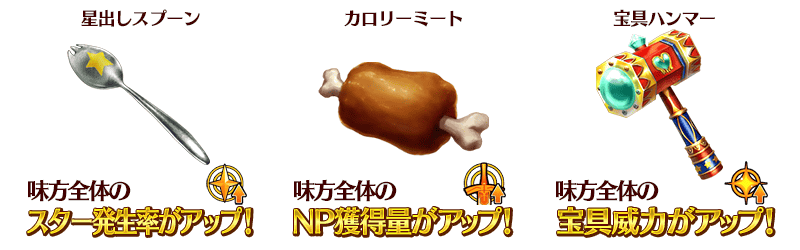
■使用推進道具讓獲得聲援點數提升！
另外使用推進道具通過聲援戰的話，可獲得比平常更多(2倍)的聲援點數。
■配合相性更加提升！
各隊伍與推進道具有相性的話，相性良好可獲得更多(3倍)的聲援點數。
選擇各隊伍的聲援戰關卡後，在點擊關卡開始所顯示的推進道具選擇畫面各推進道具的聲援點數加成倍數。
顯示最高倍率也就是與該隊伍相性最好的推進道具。
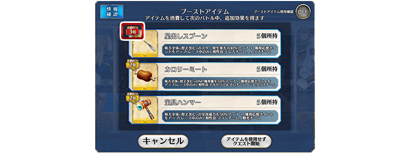
| 推進道具 | 隊伍名 |
|---|---|
| 出星湯匙 | サティスファクションＥ∴Ｔ∴Ｅ |
| 恐怖の第六天魔王Ｘ | |
| 卡路里肉 | タイラント･シューティンスター |
| デザート･ビューティ | |
| 寶具槌子 | スチームエレクトリカルwithパパ |
| 左馬権頭と三蔵法師 |
◆超值攻略方法・其2◆
對象Servant在期間限定活動「復刻:Death Jail・夏日逃脫 ～罪與絶望的梅芙大監獄2017～ 輕量版」的活動關卡中會提升活動専用道具「康諾特幣」「泡麵」「精選糖球」的掉落獲得數。
※請注意各關卡的道具掉落率並非100％。
關於在期間限定活動「復刻:Dead Heat・夏日競賽！ ～夢與希望的伊絲塔盃2017～ 輕量版」與「復刻:Death Jail・夏日逃脫 ～罪與絶望的梅芙大監獄2017～ 輕量版」登場的以下對象Servant會比其他對象Servant更多活動道具的獲得數。
【對象Servant】
| 職階 | 稀有度 | Servant名 |
|---|---|---|
| Saber | ★★★★ | 弗蘭肯斯坦 |
| Archer | ★★★★ | 海倫娜・布拉瓦茨基 |
| Lancer | ★★★★ | 源賴光 |
| Rider | ★★★★★ | 阿爾托莉亞・潘德拉剛〔Alter〕 |
| ★★★★ | 伊絲塔 | |
| Caster | ★★★★★ | 尼祿・克勞狄烏斯 |
| Assassin | ★★★★ | 尼托克里絲 |
| Berserker | ★★★★ | 織田信長 |
【其他對象Servant】
| 職階 | 稀有度 | Servant名 |
|---|---|---|
| Archer | ★★★★★ | 阿爾托莉亞・潘德拉剛 |
| ★★★★★ | 新宿的Archer | |
| ★★★★★ | 尼古拉・特斯拉 | |
| ★★★★ | 安妮・伯妮＆瑪莉・瑞德 | |
| Lancer | ★★★★★ | 恩奇杜 |
| ★★★★★ | 玉藻前 | |
| ★★★★ | 清姬 | |
| Rider | ★★★★★ | 魁札爾・科亞特爾 |
| ★★★★★ | 女王梅芙 | |
| ★★★★ | 莫德雷德 | |
| Caster | ★★★★★ | 玄奘三藏 |
| ★★★★★ | 不夜城的Caster | |
| ★★★★ | 湯瑪斯・愛迪生 | |
| ★★★★ | 瑪莉・安東尼 | |
| ★★★ | 查爾斯・巴貝奇 | |
| Assassin | ★★★★★ | 謎之女主角X |
| ★★★★ | 卡米拉 | |
| ★★★★ | 新宿的Assassin | |
| ★★★★ | 斯卡哈 | |
| Berserker | ★★★★★ | 南丁格爾 |
| Ruler | ★★★★ | 瑪爾大 |
| Avenger | ★★★★ | 戈爾貢 |
※請注意第一部與第二部做為對象的Servant會有一部份差異。
◆超值攻略方法・其3◆
裝備可靠活動道具交換入手的活動限定概念禮裝「★5(SSR)ダイブ・トゥ・ブルー」的話，在期間限定活動「復刻:Death Jail・夏日逃脫 ～罪與絶望的梅芙大監獄2017～ 輕量版」中會提升活動専用道具「康諾特幣」「泡麵」「精選糖球」的掉落獲得數。
※請注意各關卡的道具掉落率並非100％。
◆超值攻略方法・其4◆
裝備在聖晶石召喚Pick Up的期間限定概念禮裝「真夏のひと時」「キング・ジョーカー・ジャック」「カルデア・ビーチバレー」的話，在期間限定活動「復刻:Death Jail・夏日逃脫 ～罪與絶望的梅芙大監獄2017～ 輕量版」中會提升活動専用道具「康諾特幣」「泡麵」「精選糖球」各自的掉落獲得數。
※請注意各關卡的道具掉落率並非100％。
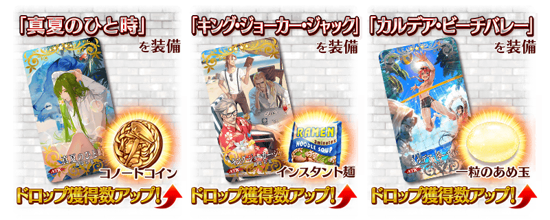
◆超值攻略方法・其5◆ 裝備在第一部的聖晶石召喚「復刻 Dead Heat・夏日競賽！ ～夢與希望的伊絲塔盃2017～Pick Up召喚(每日交替)」Pick Up中的期間限定概念禮裝「サマー・リトル」「ホワイト・クルージング」「シュガー・バケーション」的話，在期間限定活動「復刻:Death Jail・夏日逃脫 ～罪與絶望的梅芙大監獄2017～ 輕量版」中會提升活動専用道具「康諾特幣」「泡麵」「精選糖球」各自的掉落獲得數。
※請注意各關卡的道具掉落率並非100％。
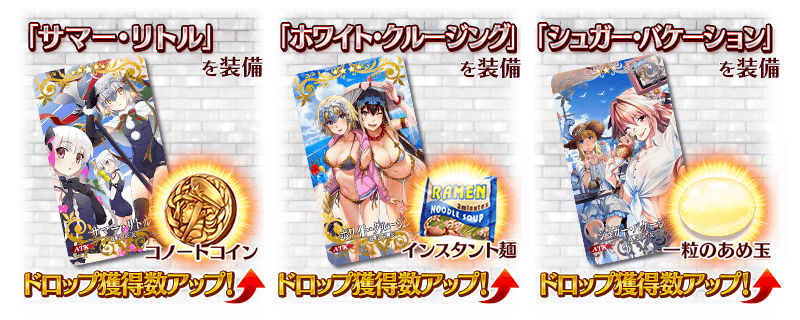
| 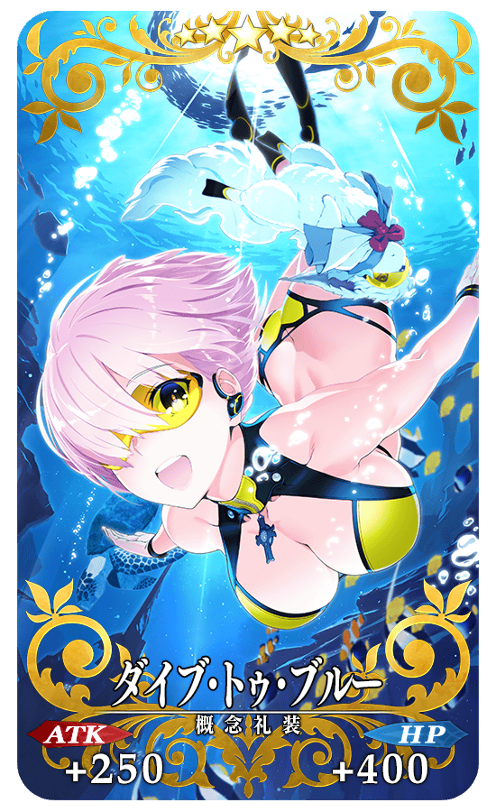 |
★★★★★SSR |
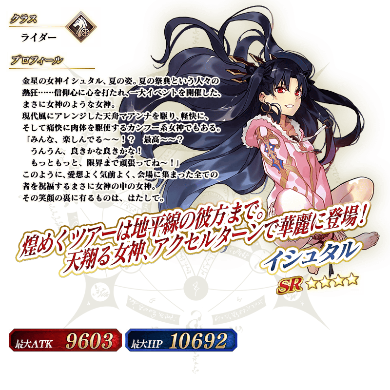
介紹伊絲塔(Rider)的寶具演出！
在「Fate/Grand Order」官方網站內的公告中，公開了「★4(SR)伊絲塔(Rider)」的寶具演出。敬請確認。
◆交換方法◆
交換期間:2018年7月4日(三) 17:00～7月20日(五) 11:59
※交換期間結束後「黎明之金星」「康諾特幣」「泡麵」「精選糖球」「出星湯匙」「卡路里肉」「寶具槌子」會消失。
活動専用道具可自點擊管理室(ターミナル)畫面右上「活動報酬」的「活動道具交換」畫面，交換以下的道具。
※英靈結晶・流星之芙芙ALL★4(HP)、英靈結晶・日輪之芙芙ALL★4(ATK)的交換會在通過期間限定活動「復刻:Death Jail・夏日逃脫 ～罪與絶望的梅芙大監獄2017～ 輕量版」主線關卡後開放。
◆能用黎明之金星交換的道具◆
|
【活動限定Servant】 |
◆能用康諾特幣交換的道具◆
| 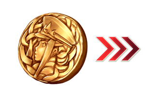 |
【活動限定概念禮裝】 【技能強化＆靈基再臨素材】 【靈基再臨素材】 【其他道具】 |
◆能用泡麵交換的道具◆
|
【活動限定概念禮裝】 【技能強化＆靈基再臨素材】 【靈基再臨素材】 【其他道具】 |
◆能用精選糖球交換的道具◆
| 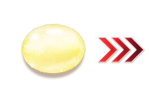 |
【活動限定概念禮裝】 【技能強化＆靈基再臨素材】 【其他道具】 |
◆能用出星湯匙・卡路里肉・寶具槌子交換的道具◆
※活動舉辦期間結束後才能交換。
| 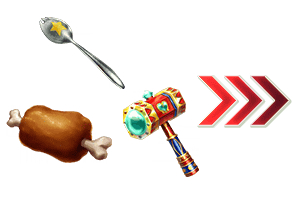 |
【其他道具】 |
以通過期間限定活動「復刻:Death Jail・夏日逃脫 ～罪與絶望的梅芙大監獄2017～ 輕量版」主線關卡及「終局特異點」的Master為對象開放高難易度的「挑戰關卡」。
「挑戰關卡」就算通過後也不會消失，能無數次挑戰，可以變更Servant和概念禮裝的組合後再次挑戰。
※關卡通過報酬、戰利品、Master經驗值、魔術禮裝經驗值、絆點數只可在初次通過時獲得。
◆挑戰關卡參加條件◆
只限通過期間限定活動「復刻:Death Jail・夏日逃脫 ～罪與絶望的梅芙大監獄2017～ 輕量版」的主線關卡及「終局特異點」的Master才能參加
◆挑戰關卡初次通過報酬◆
傳承結晶 1個
以期間限定在達文西工房的「魔力稜鏡交換」追加下述道具。
|
◆交換期間◆ |
| 追加道具 | 能交換 次數 |
1次交換所需的 魔力稜鏡數 |
|---|---|---|
| 【期間限定】叡智的猛火 ALL★4(SR)10張組 |
10次 | 20個 |
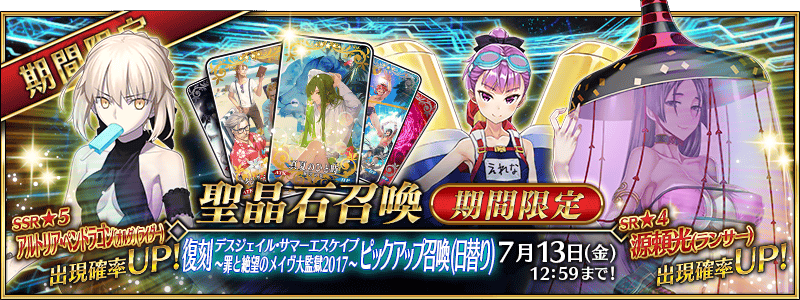
◆「復刻 Death Jail・夏日逃脫 ～罪與絶望的梅芙大監獄2017～Pick Up召喚(每日交替)」期間◆
期間:2018年7月4日(三) 17:00～7月13日(五) 11:59
舉辦期間限定「復刻 Death Jail・夏日逃脫 ～罪與絶望的梅芙大監獄2017～Pick Up召喚(每日交替)」！
身穿適合夏日服裝的Servant「★5(SSR)阿爾托莉亞・潘德拉剛〔Alter〕(Rider)」「★4(SR)海倫娜・布拉瓦茨基(Archer)」「★4(SR)源賴光(Lancer)」以期間限定登場！
變更在2017年舉辦的「Death Jail・夏日逃脫 ～罪與絶望的梅芙大監獄2017～ Pick Up召喚」一部份內容進行復刻。
「★4(SR)海倫娜・布拉瓦茨基(Archer)」「★4(SR)源賴光(Lancer)」以每日交替Pick Up，「★5(SSR)阿爾托莉亞・潘德拉剛〔Alter〕(Rider)」常駐Pick Up！
※阿爾托莉亞・潘德拉剛〔Alter〕(Rider)、海倫娜・布拉瓦茨基(Archer)、源賴光(Lancer)在Pick Up期間結束後不會追加到故事召喚。
詳情請在聖晶石召喚畫面左下的召喚詳細確認。
裝備期間限定概念禮裝「★5(SSR)真夏のひと時」「★4(SR)キング・ジョーカー・ジャック」「★3(R)カルデア・ビーチバレー」的話在期間限定活動「復刻:Death Jail・夏日逃脫 ～罪與絶望的梅芙大監獄2017～ 輕量版」及期間限定活動「復刻:Dead Heat・夏日競賽！ ～夢與希望的伊絲塔盃2017～ 輕量版中會提升活動専用道具的掉落獲得數。
※「★3(R)カルデア・ビーチバレー」在Pick Up期間中，也能在友情點數召喚獲得。
※請注意自友情點數召喚抽出「★3(R)カルデア・ビーチバレー」在自動變還設定登錄★3(R)概念禮裝的情況，會變成自動變還的對象。
Pick Up期間中，期間限定Servant、期間限定概念禮裝的出現機率提升！
10次召喚中確定1張★4(SR)以上和確定1位★3(R)以上的Servant！
※確定★4(SR)以上包含Servant和概念禮裝。
| 每日交替Pick Up期間 | 每日交替Pick Up內容 |
|---|---|
| 7月4日(三) 17:00～ 7月7日(六) 22:59 |
阿爾托莉亞・潘德拉剛〔Alter〕(Rider) 海倫娜・布拉瓦茨基(Archer) 源賴光(Lancer) |
| 7月7日(六) 23:00～ 7月9日(一) 22:59 |
阿爾托莉亞・潘德拉剛〔Alter〕(Rider) 海倫娜・布拉瓦茨基(Archer) |
| 7月9日(一) 23:00～ 7月11日(三) 22:59 |
阿爾托莉亞・潘德拉剛〔Alter〕(Rider) 源賴光(Lancer) |
| 7月11日(三) 23:00～ 7月13日(五) 11:59 |
阿爾托莉亞・潘德拉剛〔Alter〕(Rider) 海倫娜・布拉瓦茨基(Archer) 源賴光(Lancer) |
※請注意會以每日交替變更Pick Up的Servant。
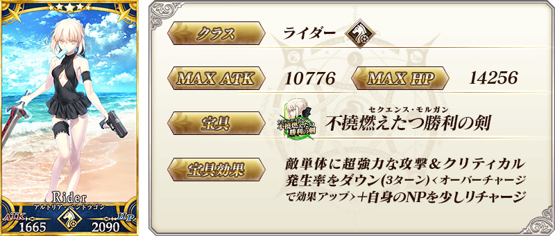
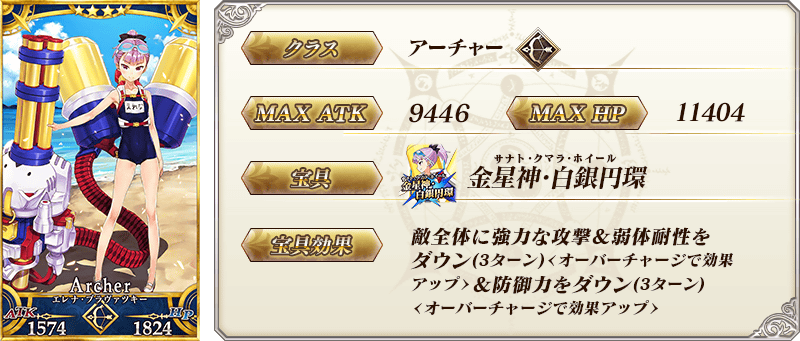
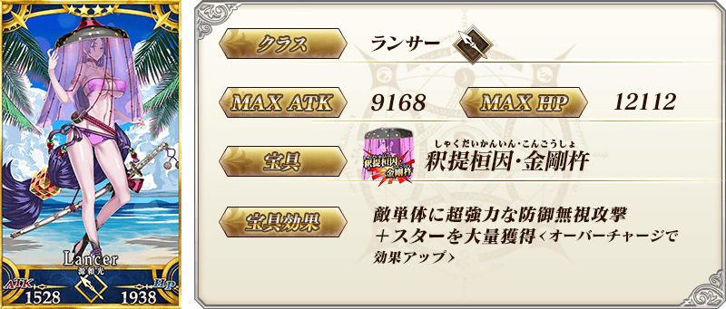
| 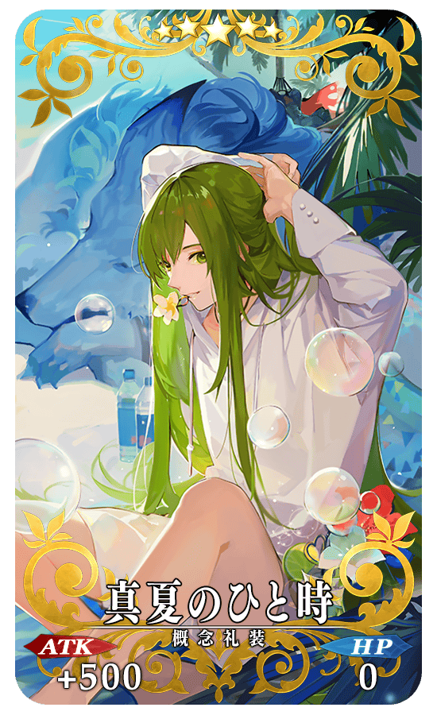 |
★★★★★SSR |

| 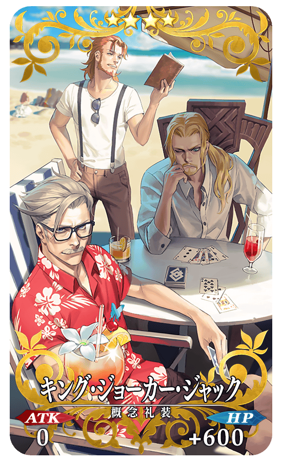 |
★★★★SR |
| 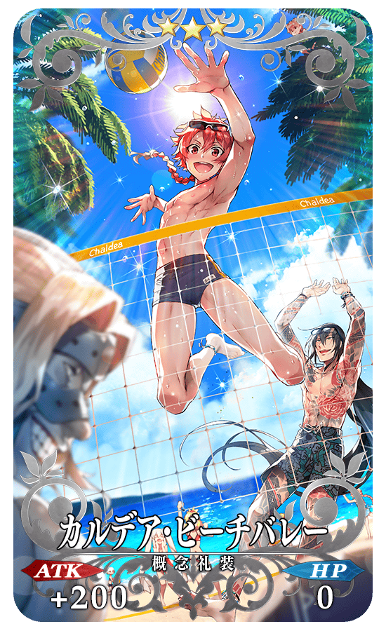 |
★★★R |
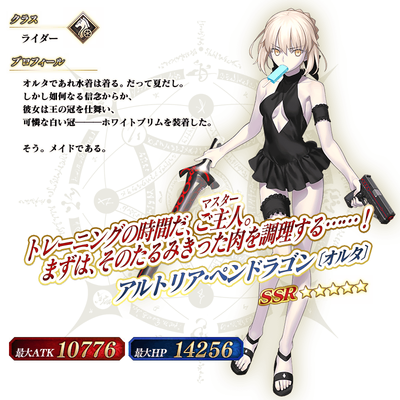
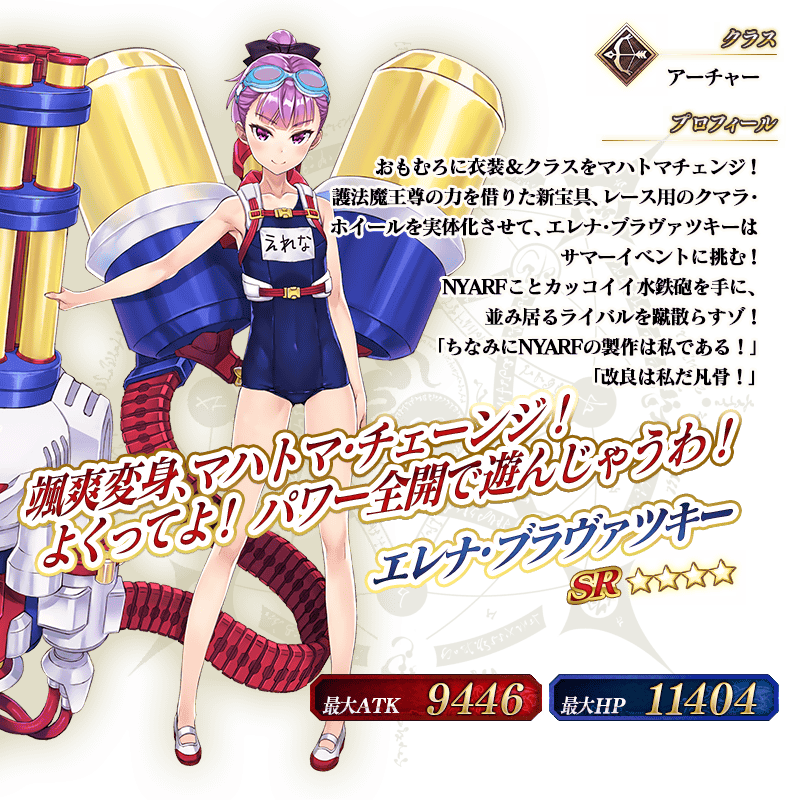
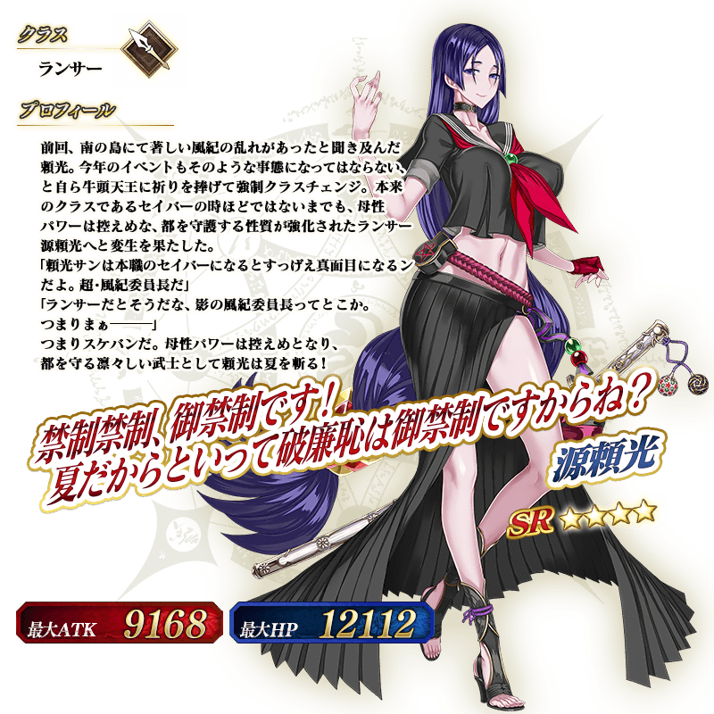

介紹阿爾托莉亞・潘德拉剛〔Alter〕(Rider)、海倫娜・布拉瓦茨基(Archer)、源賴光(Lancer)的寶具演出！
在「Fate/Grand Order」官方網站內的公告中，公開了「★5(SSR)阿爾托莉亞・潘德拉剛〔Alter〕(Rider)」「★4(SR)海倫娜・布拉瓦茨基(Archer)」「★4(SR)源賴光(Lancer)」的寶具演出。敬請確認。
關於「復刻:Dead Heat・夏日競賽！ ～夢與希望的伊絲塔盃2017～ 輕量版」詳情請自下述橫幅確認。